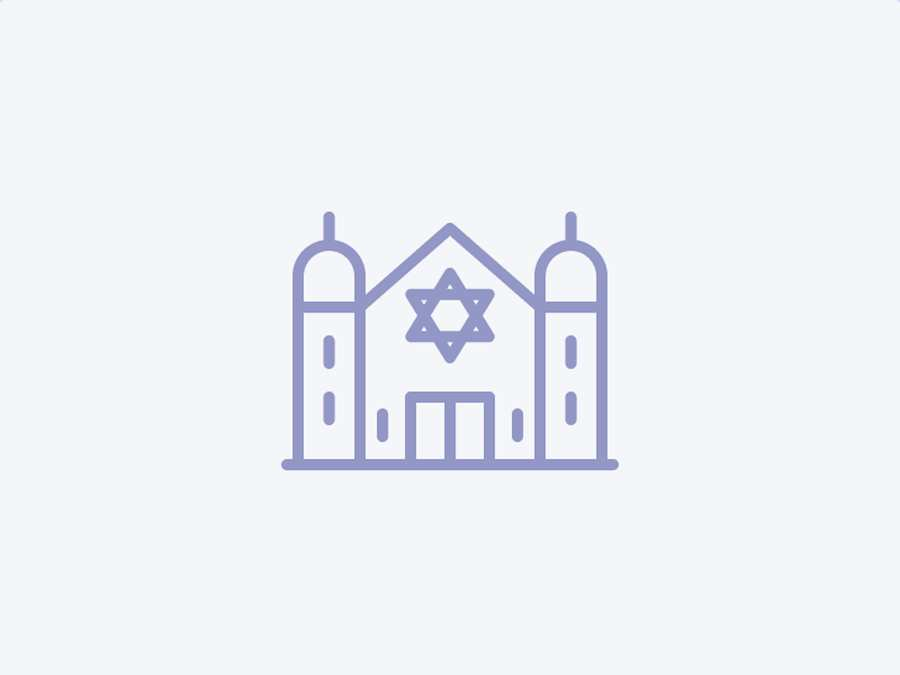
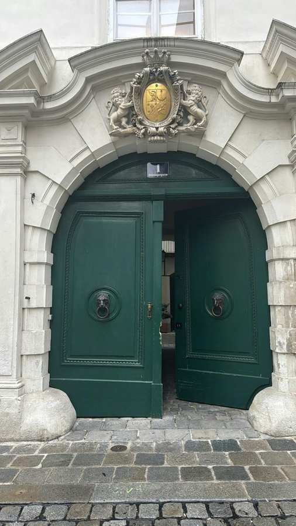
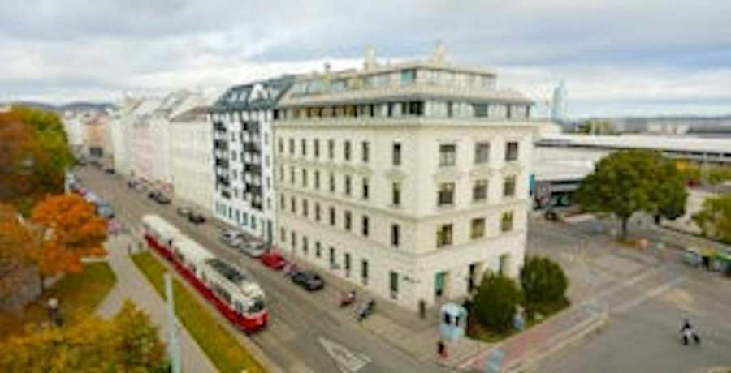
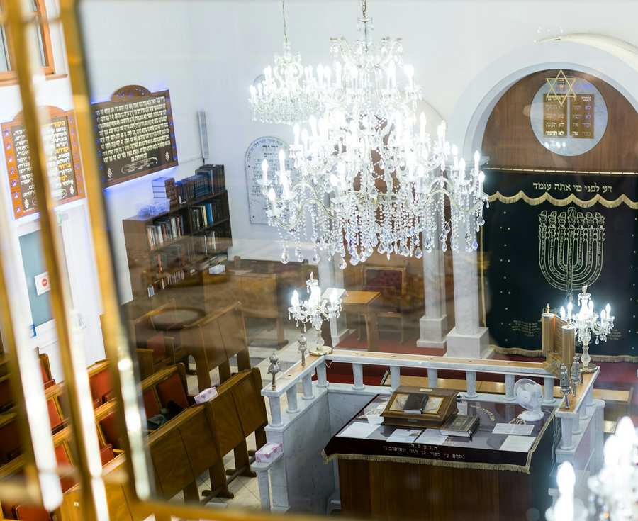
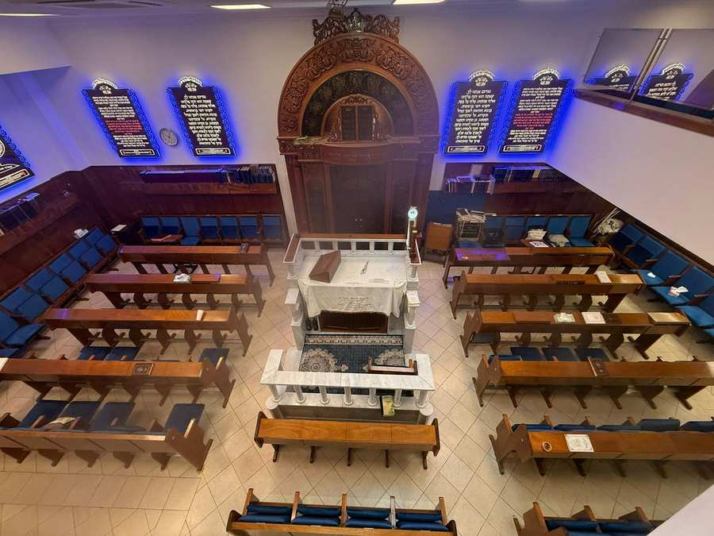
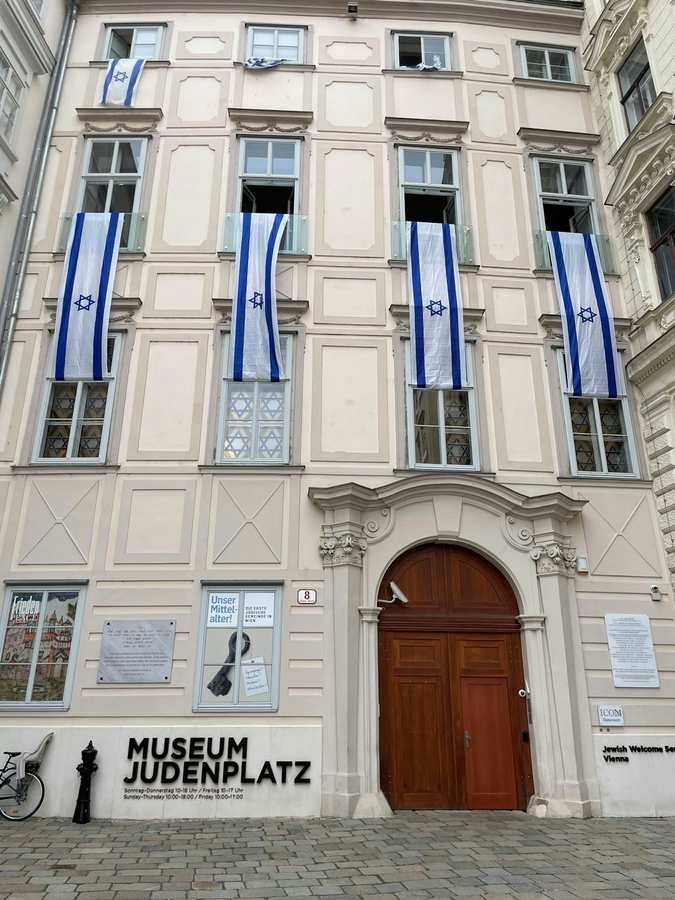
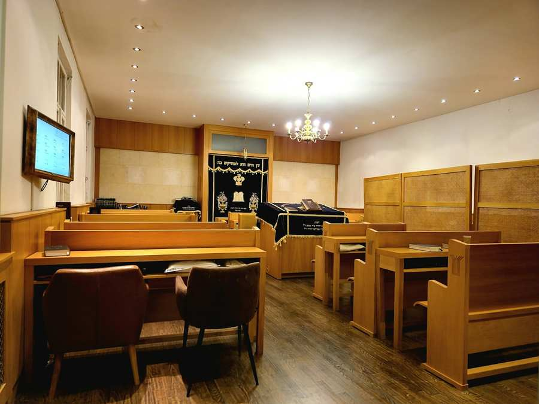
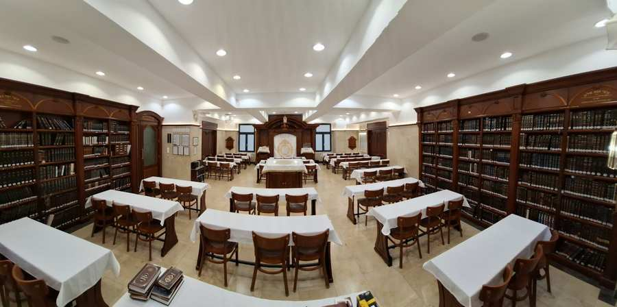
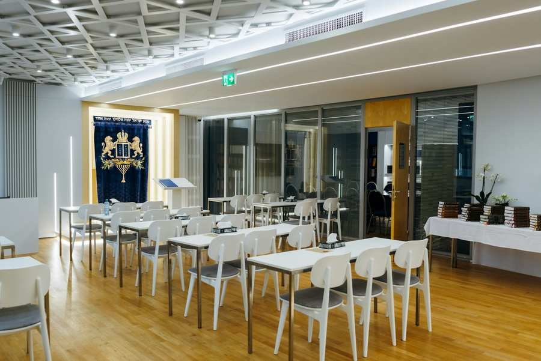
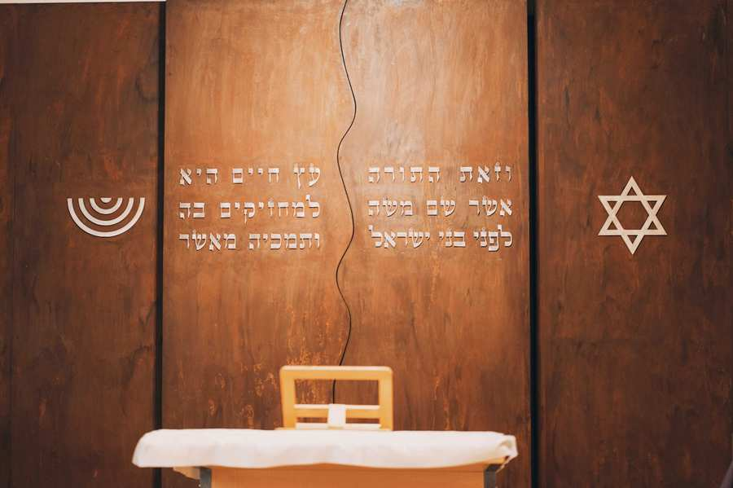

Bild: IKG Wien Home/Religiöses/Synagogen Agudas Jeshurun You can find the contact details in the sidebar. Marc Aurel Str 2b Stiege 7, 1010 Vienna Phone: +43 6643222817 Other Synagogues and Mikvot Bild: IKG Wien Agudas Israel Bild: IKG Wien Bet Halevi Bild: IKG Wien prayer room at AKH Bild: IKG Wien Bucharische Synagoge Bild: IKG Wien Chabad Haus Bild: IKG Wien Georgian Synagogue Bild: IKG Wien Hamidrasch Torah etz Chayim Bild: IKG Wien Heichal Menachem Chabad Synagogue Bild: IKG Wien Caucasian-Sephardic Cultural Association Bild: IKG Wien Khal Chassidim Bild: IKG Wien Machsike Hadass Bild: IKG Wien Mikwe Agudas Israel Bild: IKG Wien Mikwe Chabad Bild: IKG Wien Mikwe Machsike Hadass Bild: IKG Wien Misrachi Bild: IKG Wien Ohel Avraham Synagogue Bild: IKG Wien Ohel Moshe Bild: IKG Wien Russian-speaking synagogue Bild: IKG Wien Shaare Ovadia (Augarten) Synagoge Bild: IKG Wien Synagogue Baden Bild: IKG Wien Synagogue Blumauergasse Bild: IKG Wien Synagoge Graz Bild: IKG Wien Synagoge in der ZPC Schule Bild: IKG Wien Verein Or Chadash Bild: IKG Wien Wiener Jeschiwah